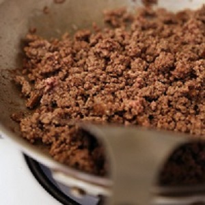
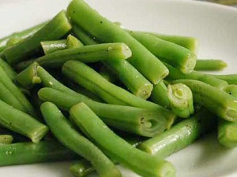
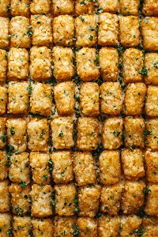

| HotDish Directions | Step 1 | Brown hamburger and place in a casserole dish |  |
|---|---|---|
| Step 2 |
Place can of |
 |
| Step 3 | Add Cream of mushroom soup |
|
| Step 4 | Place tater tots on top in orderly fashion |  |
| Step 5 | Cook at 350 for 7-10 minutes and enjoy |